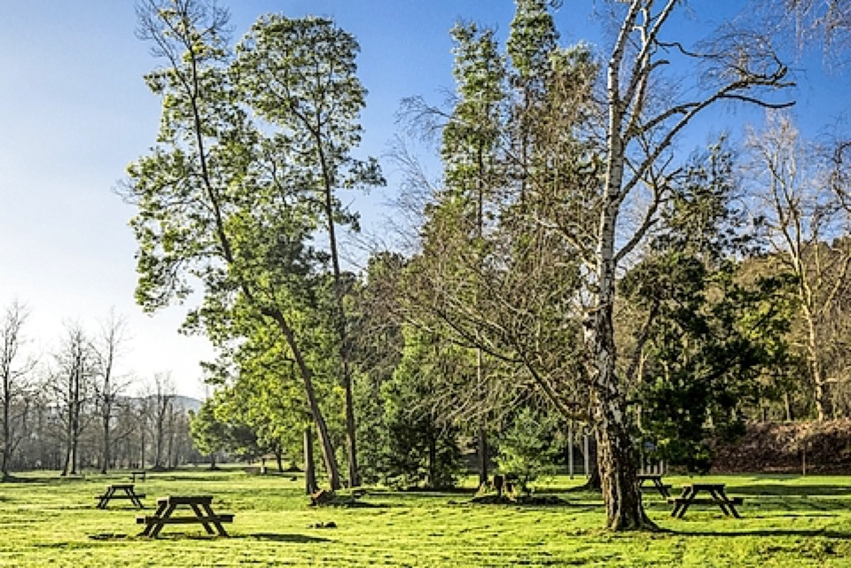

La Viesca es un espacio de 80 hectáreas que ha sido declarado ANEI, Área Natural de Especial Interés
Se trata de una zona constituida en su mayor parte por antiguos rellenos con estériles, mayoritariamente arcillas, procedentes de la explotación minera,
sobre la que se procedió a la plantación de una cobertura arbolada de falsa acacia (Robinia pseudoacacia) con el propósito de estabilizar dichos terrenos

|
Viaverde
La lechera
|